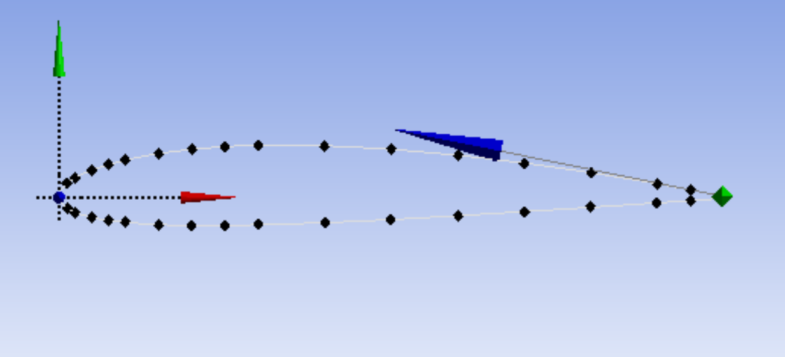
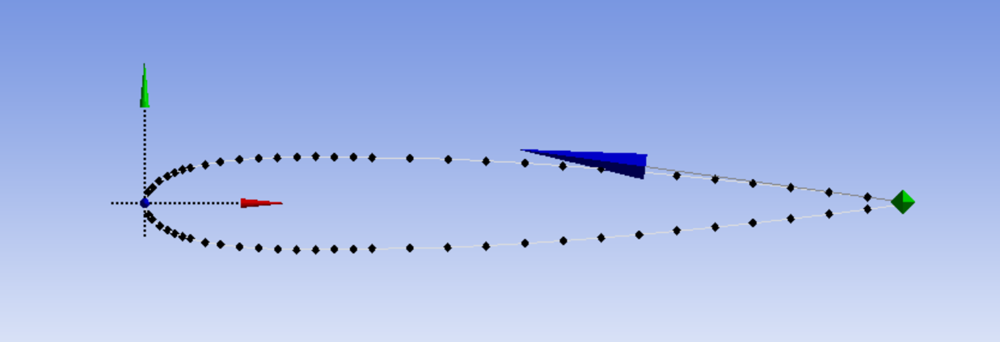
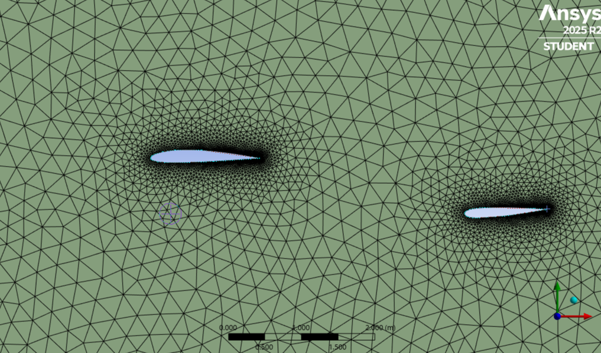
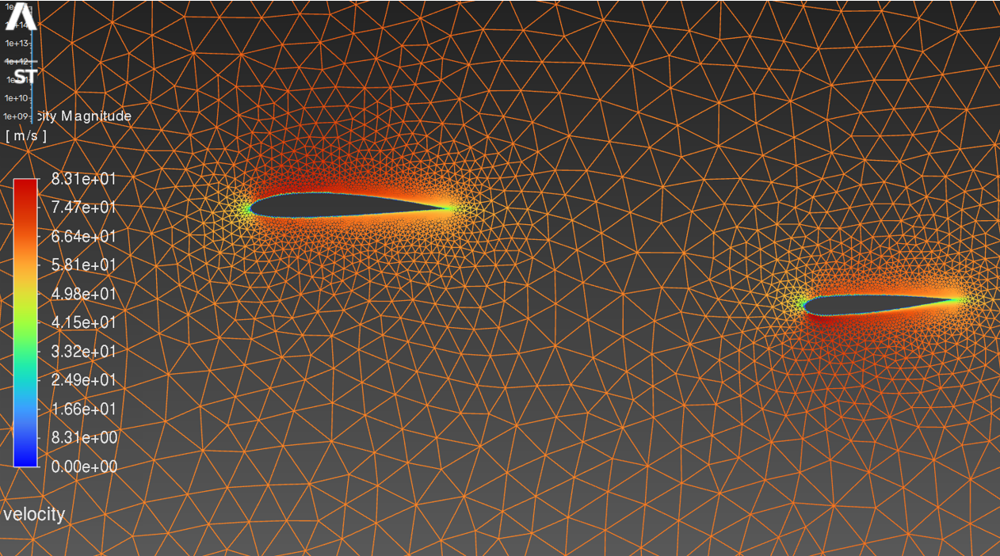

Cessna 172-S: Wing and Horizontal Stabilizer Downwash Analysis
Overview
The objective of this project was to model the 2D flow over the main wing and horizontal stabilizer of a Cessna 172-S at cruise conditions using ANSYS Fluent. The goal was to observe how the main wing's downwash affects the lift and drag on the horizontal stabilizer at different angles of attack — a fundamental aerodynamic interaction in conventional aircraft design.
Geometry Setup
The Cessna 172-S uses a NACA 2412 airfoil for the main wing and a NACA 0012 symmetric airfoil for the horizontal stabilizer. Airfoil coordinate data for both profiles was sourced from airfoiltools.com and imported into ANSYS DesignModeler. Setting up the geometry required more than just placing two airfoils in a domain. I referenced the Cessna 172-S Pilot Operating Handbook to determine the main wing's Mean Aerodynamic Chord (58.8 in, from the Airplane Weighing Form), and calculated the stabilizer MAC from the taper ratio using root and tip chord measurements found in reference drawings (yielding an MAC of 1.129 m). The horizontal and vertical offset between the wing and stabilizer were estimated from the POH's three-view drawing using the fuselage station and waterline coordinate system. The stabilizer was positioned 169.1 in aft and 30 in below the main wing, then rotated to its -3 degree incidence angle. The flow domain extended 20 chord lengths upstream, 30 downstream, and 20 above and below the airfoils.


Flow Conditions & Solver Setup
Cruise conditions at 10,000 ft were taken from the POH: a cruise speed of approximately 122 KTAS (62.8 m/s), with air density of 0.9046 kg/m³ and dynamic viscosity of 1.694 x 10⁻⁵ Pa·s from the International Standard Atmosphere. This gave a Reynolds number of approximately 5 x 10⁶, justifying the use of the SST k-omega turbulence model. To simulate different airplane attitudes, the freestream velocity was decomposed into x and y components at the inlet for each angle of attack (0, 2, 4, 6, and 8 degrees), and the lift and drag reference directions were updated accordingly for each case.

Results
The stabilizer produced negative lift at all angles of attack, which is expected since the horizontal stabilizer on a conventional aircraft generates a downward force to balance the wing's nose-down pitching moment. As airplane AoA increased from 0 to 8 degrees, the stabilizer lift coefficient became less negative, moving from -0.3233 to -0.1863. This occurs because the main wing produces greater downwash at higher angles of attack, which reduces the effective angle of attack seen by the stabilizer.
The drag coefficient shifted from positive (0.0123 at 0 degrees) to negative (-0.01 at 8 degrees), indicating that at higher AoA the downwash tilts the flow enough at the stabilizer to produce a forward force component from the pressure distribution. The velocity and pressure contours confirmed the interaction: the wing's trailing edge wake was visible as a region of reduced velocity propagating downstream toward the stabilizer, deflecting further downward with increasing AoA.
